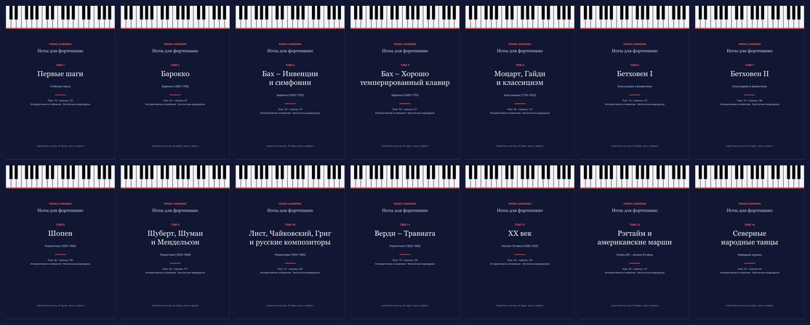
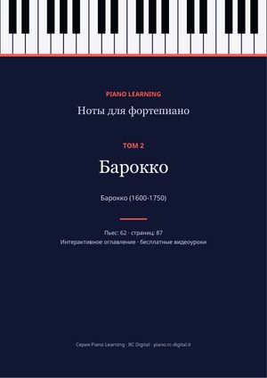
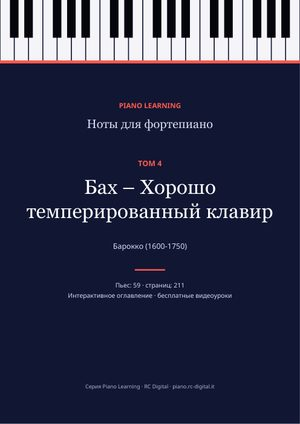
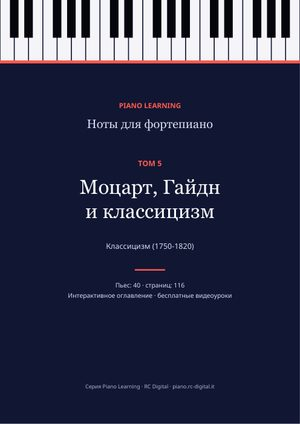
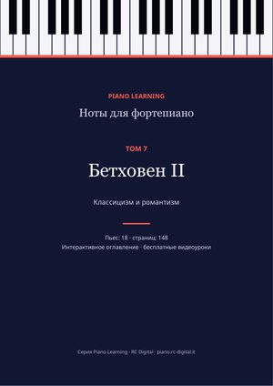
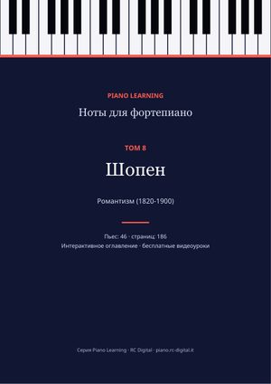
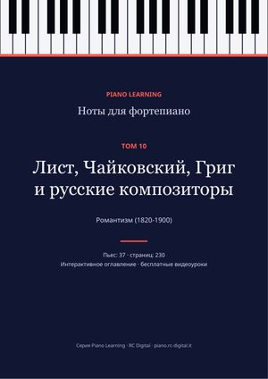
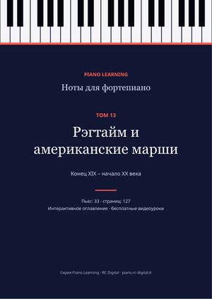
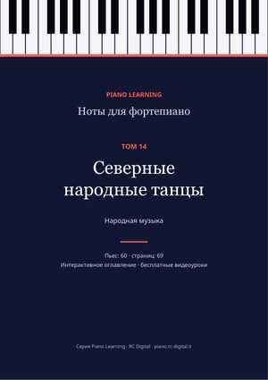

Том 15Рождественские песни и лёгкие мелодииПьес: 41 · страниц: 54
Том 15Рождественские песни и лёгкие мелодииПьес: 41 · страниц: 543,99 €Купить
Piano Learning · PDF
564 пьесы · 1 933 страницы нот · 14 томов · 10 языков

Все 14 томов: пьес — 564, страниц нот — 1 933.
55,86 €19,99 €−64%
Том 15Рождественские песни и лёгкие мелодииПьес: 41 · страниц: 54 Том 1Первые шагиПьес: 74 · страниц: 132
Том 1Первые шагиПьес: 74 · страниц: 132
Том 2БароккоПьес: 62 · страниц: 87 Том 3Бах – Инвенции и симфонииПьес: 30 · страниц: 76
Том 3Бах – Инвенции и симфонииПьес: 30 · страниц: 76
Том 4Бах – Хорошо темперированный клавирПьес: 59 · страниц: 211
Том 5Моцарт, Гайдн и классицизмПьес: 40 · страниц: 116 Том 6Бетховен IПьес: 18 · страниц: 125
Том 6Бетховен IПьес: 18 · страниц: 125
Том 7Бетховен IIПьес: 18 · страниц: 148
Том 8ШопенПьес: 46 · страниц: 186 Том 9Шуберт, Шуман и МендельсонПьес: 28 · страниц: 151
Том 9Шуберт, Шуман и МендельсонПьес: 28 · страниц: 151
Том 10Лист, Чайковский, Григ и русские композиторыПьес: 37 · страниц: 230 Том 11Верди – ТравиатаПьес: 19 · страниц: 139
Том 11Верди – ТравиатаПьес: 19 · страниц: 139 Том 12XX векПьес: 40 · страниц: 136
Том 12XX векПьес: 40 · страниц: 136
Том 13Рэгтайм и американские маршиПьес: 33 · страниц: 127
Том 14Северные народные танцыПьес: 60 · страниц: 69Нажмите на название в оглавлении — и вы сразу на нужной странице. Есть и закладки.
Несколько строк о том, кто написал музыку, которую вы играете.
От нот к видео с падающими нотами — для каждой пьесы, у которой оно есть.
Одна покупка — и вы скачиваете издание на удобном вам языке.
Первая страница четырёх пьес из серии. Нажмите на страницу, чтобы открыть пьесу.
В PDF. Их можно открыть на компьютере, планшете и телефоне, а также распечатать. Каждый том — один файл с интерактивным оглавлением и закладками.
Каждая покупка включает издание на 10 языках: итальянском, английском, немецком, испанском, французском, португальском, русском, китайском, японском и корейском. Вы скачиваете то, которое вам удобнее.
Сразу после оплаты откроется страница загрузки, и вам придёт письмо со ссылкой. Каждый отдельный том — это PDF; вся серия — по одному ZIP-файлу на язык с 14 PDF (около 50 МБ).
Да. Это свободные издания (общественное достояние или Creative Commons), и на страницах этого сайта есть бесплатная ссылка на каждую пьесу. В серии они все собраны и упорядочены по композиторам и эпохам, с оглавлением, биографиями, ссылками на уроки и полными сведениями о каждом издании.
Нет. Том 15, «Рождественские песни и лёгкие мелодии», продаётся отдельно за 3,99 €. Вся серия включает тома с 1 по 14.
Безопасная оплата через Payhip и мгновенная загрузка по электронной почте. Ноты — свободные издания (общественное достояние или Creative Commons): их можно найти и бесплатно, по одной пьесе, на страницах этого сайта; здесь они собраны и упорядочены в одном файле, с полными сведениями о каждом издании.